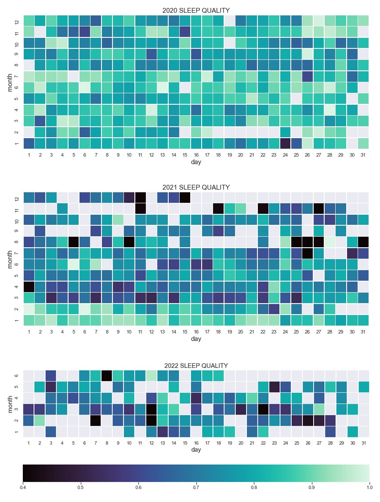
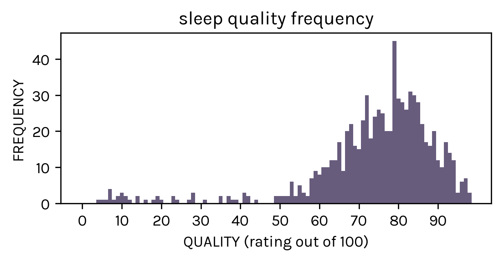
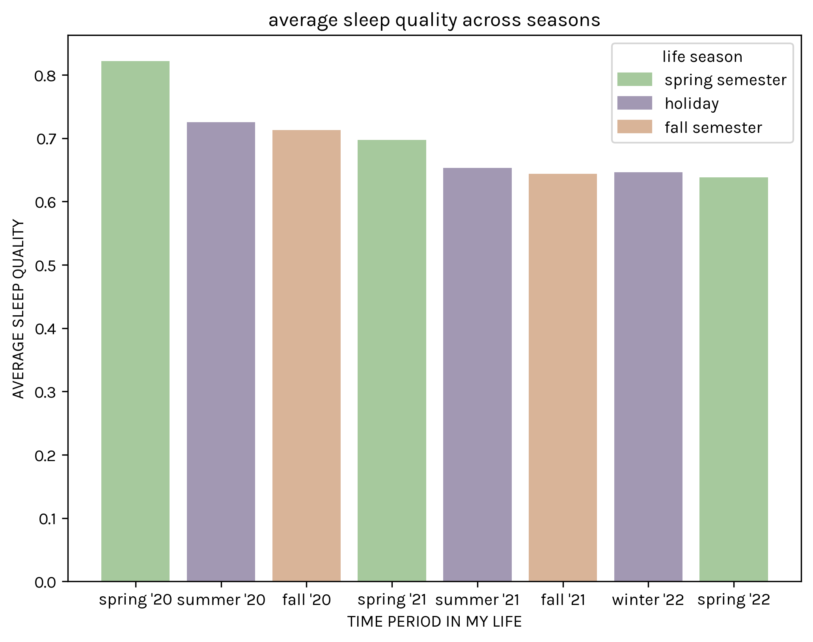
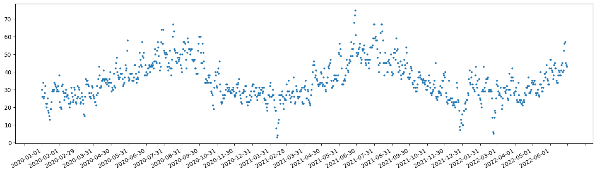
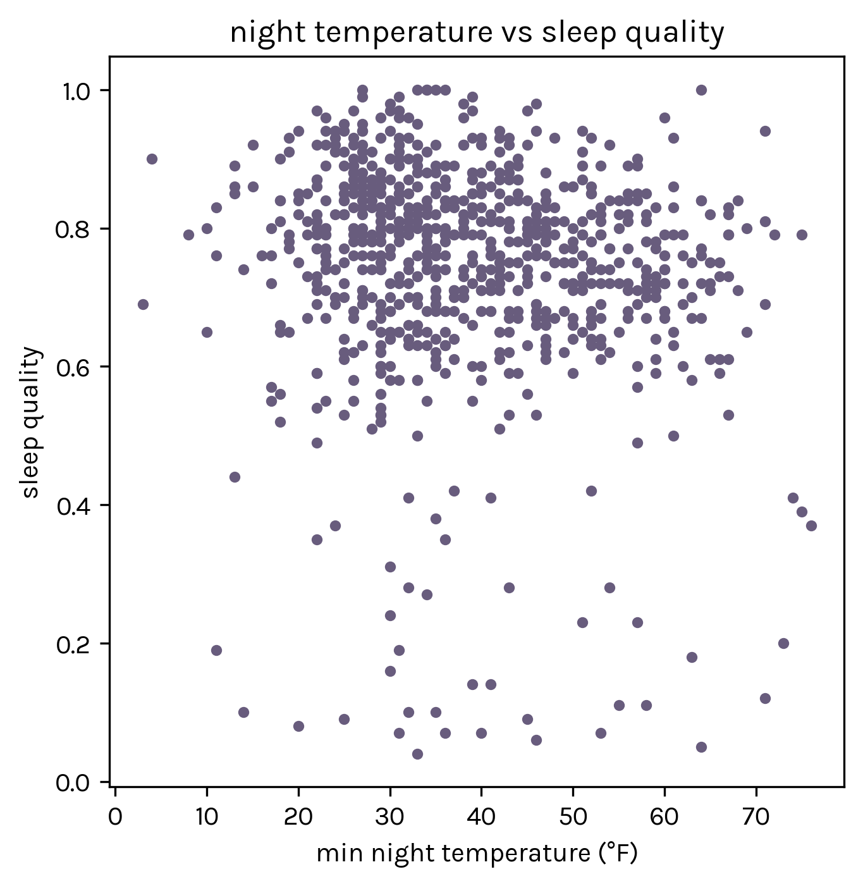
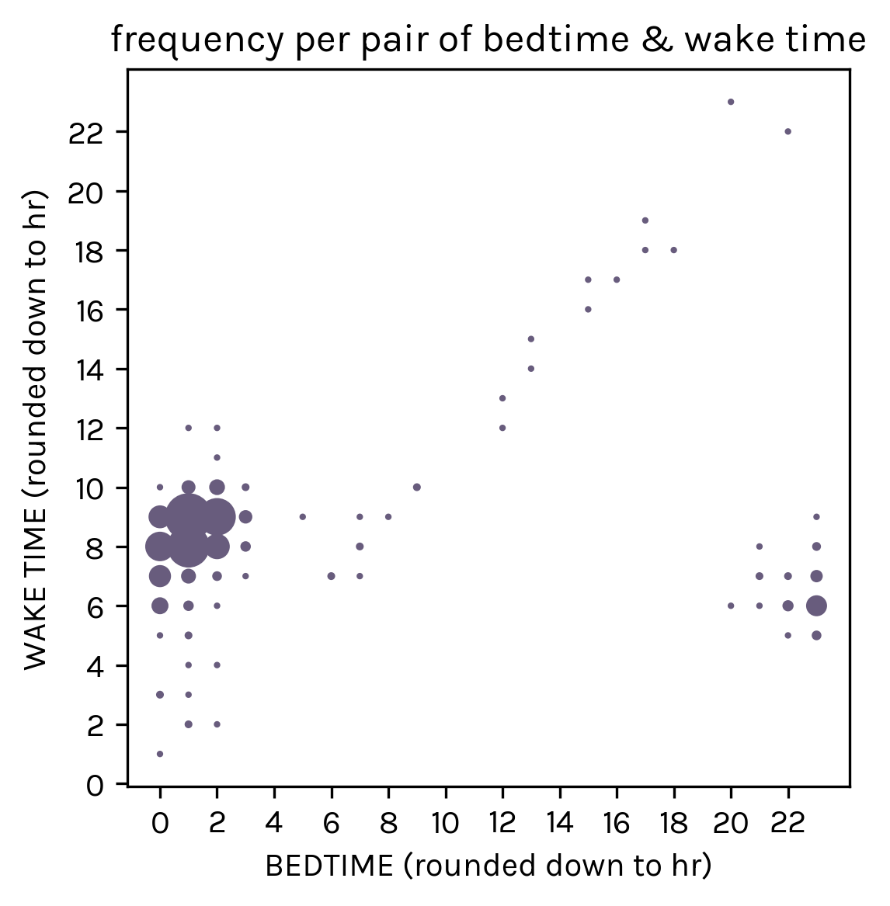
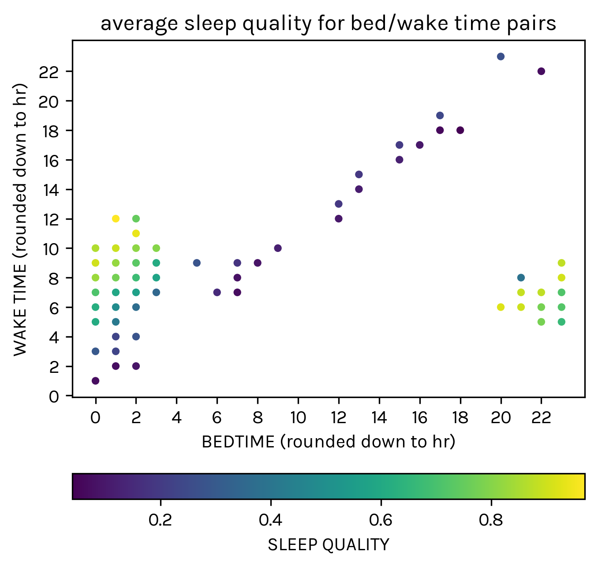

This was an investigation into the factors that might affect my sleep patterns and quality, inspired by my discovery of a download-your-data button in the Sleep Cycle app (I’ve used Sleep Cycle since December 2019). I started with a quick investigation of nightly sleep qualities, a numerical score between 0 and 1 given by the app after every sleep, with 1 being the best quality and 0 being the worst:
The three images from top-to-bottom consecutively track forward in time (January 2020 to June 2022). Of note are two things: 1) my sleep has slowly worsened in quality over time and 2) I have been using the app less more recently, in part actually because my sleep habits have been more erratic.
Nevertheless, it appears that my sleep quality scores are distributed relatively normally (this being concluded via eye test, as I did not attempt to fit a normal curve to the data), with a peak around .80.
My initial assumption was that being in school versus out of school would have some amount of impact on the overall quality of sleep. To assess this, I used the yearly seasons as approximations for school semesters—with fall semester being the fall season, for example—and then determined the average sleep quality per season:
Purple bars represent holiday seasons (no school) while the orange and green bars represent academic seasons (school was in session). Unfortunately, I don’t think this data suggests any statistically significant impact of the season on my sleep. (As I consider it more, I also don’t think this visualization or metric was perhaps the most effective analysis. Weekends, for instance, may or may not be a confounding factor in the seasonal averages.)
As a side note: the biggest drops in sleep quality per season seem to happen from spring to summer (both in 2020 and 2021). I cannot come up with a logical explanation for why this appears to be the case,.
My next guess was that the night temperature would affect my sleep quality. The struggle with assessing causation here is that I unfortunately was not recording night temperatures on a daily basis, and especially not the night temperature from inside my bedroom, which is the measurement that I would presume to have the most direct impact on my sleep.
Temperature data was thus retrieved from the weather.gov historical climate info; I thought this could be a good opportunity to have my first experience with web scraping any sort of content. Here is the resulting, fairly normal looking weather data for Seattle, in which I retrieved the minimum daily temperature of the day to act as a proxy for night temperature per day:
Temperature data was made even slightly more complicated in that I go to college in Boston, MA but home is in Seattle, WA. I specifically retrieved Boston data for the rough time spans in which I was in Massachusetts. The resulting plot is what temperatures look like against my sleep quality scores:
Which again suggests no real correlation whatsoever (it appears I have horrible sleep nights no matter the temperature, for instance. One could also make an argument that I do not have that many good sleep nights when the minimum temperature is higher than 60 degrees F, but for how many days is the minimum daily temperature above 60 degrees, anyway?).
My last investigation was if going to sleep earlier or later might impact the quality of the sleep I get. As an initial investigation I had a look to see if how my bedtimes impact my wake times (in other words, if going to bed later means I usually wake up later, too):
The data does not say much except that I typically sleep at around 12-1am, and wake up around 8-9am. If I were to do this again, I would likely toss away all the data outside that range, and then zoom in on pairs of times within those ranges.
The sleep quality data for these bedtime/wake time pairs was pretty unrevealing, though. The data lying along the diagonal reflects much worse sleep quality because those are all likely naps I took throughout the data (the app tends to mark naps as low quality because they are only a couple hours long). Other than that, sleep quality in the 2-3am range looks to be marginally worse than earlier bedtimes.
In conclusion, my sleep quality is either 1) too complex a variable to be determined by one or more of these factors, or 2) the proxies I used to assess correlation and causation are not detailed enough. I think it could be interesting to revisit the data in another 5-10 years, when my life is perhaps a little more stable (I could look throughout the four years of college, or otherwise in the years post-undergrad), and see how things have changed.